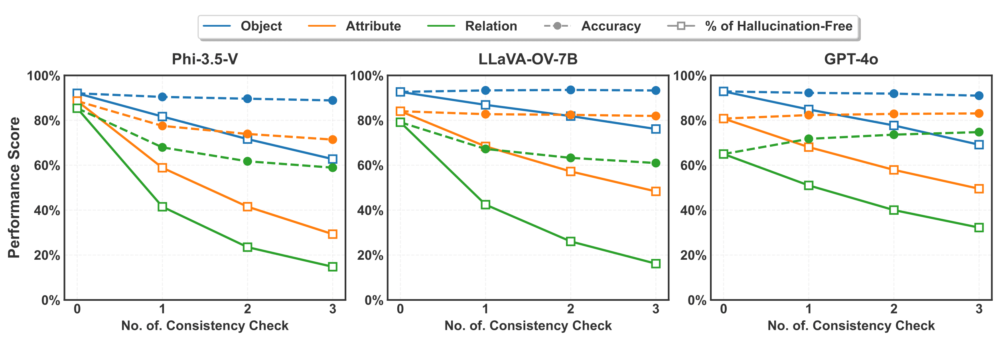

To evaluate an MLLM and reveal hallucinations via consistency checks, we propose the GHOST Consistency Score (GCS).
Unlike image-level metrics that treat questions independently, GCS penalizes hallucinations according to their frequency using
exponentially decaying weights.
$$ \text{GCS} = 1 - \left( \sum_{i=1}^{N_{\text{hallu}}} \frac{1}{2^{i-1}} \right) \Big/ \left( \sum_{i=1}^{N_{\text{total}}} \frac{1}{2^{i-1}} \right) $$
Here, \(N_{\text{hallu}}\) is the number of hallucinations (\(\mathrm{FP}+\mathrm{FN}\)), and \(N_{\text{total}}\) is the total number of
questions in the category (object, attribute, relation). The weights \(w_i = 2^{-(i-1)}\) emphasize that even a single hallucination is
highly informative of misunderstanding. The overall score averages categories:
$$ \text{Overall GCS} = \tfrac{1}{3}\, (\, \text{GCS}_{\text{obj}} + \text{GCS}_{\text{attr}} + \text{GCS}_{\text{rel}}\,) $$